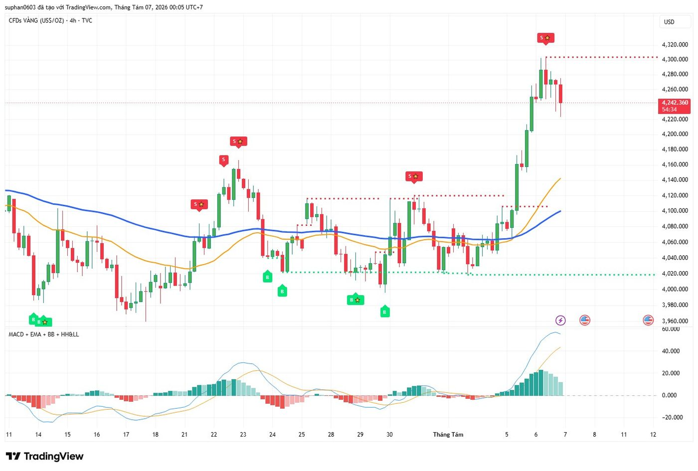
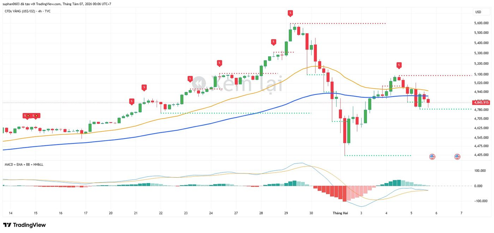
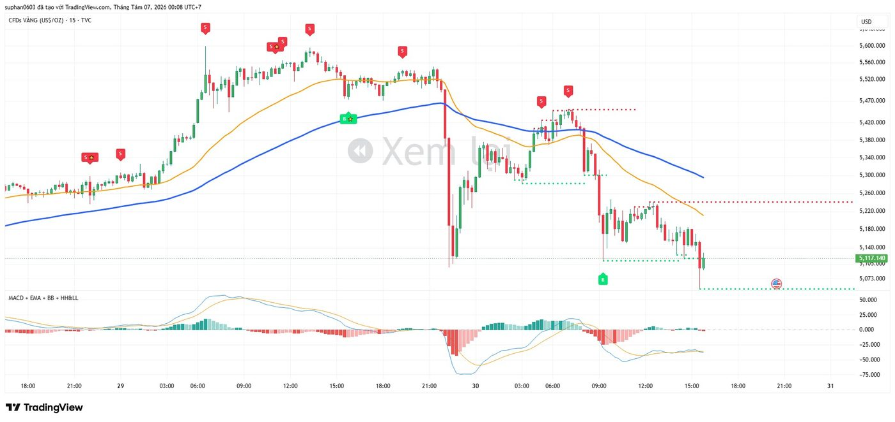
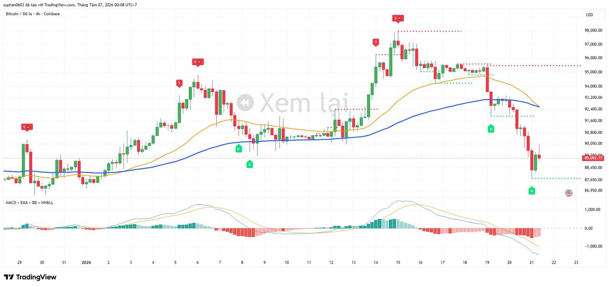
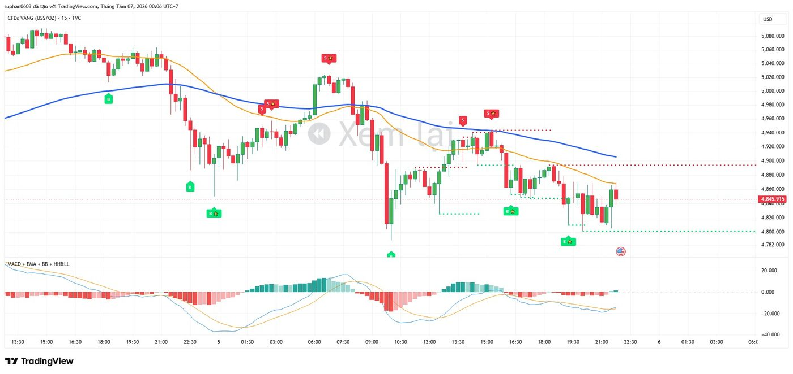
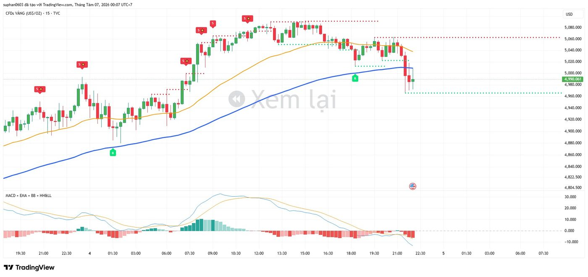
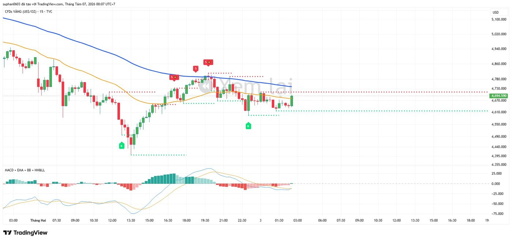
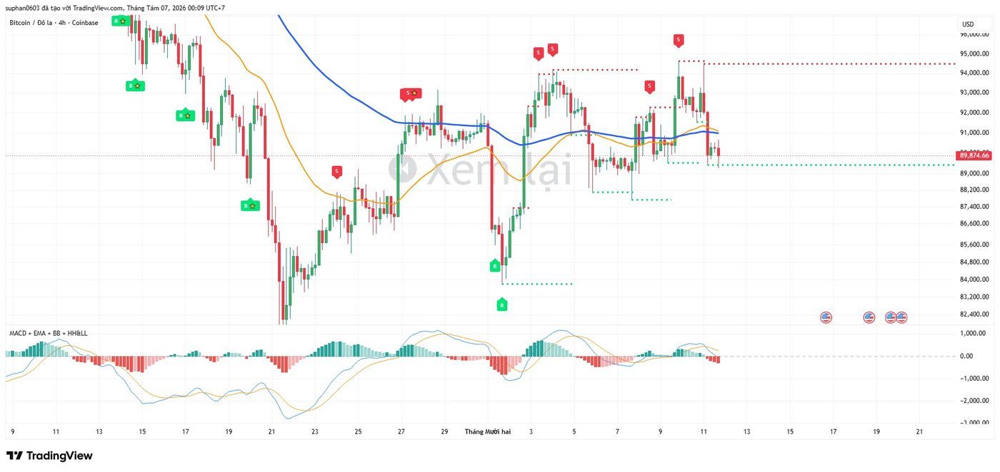
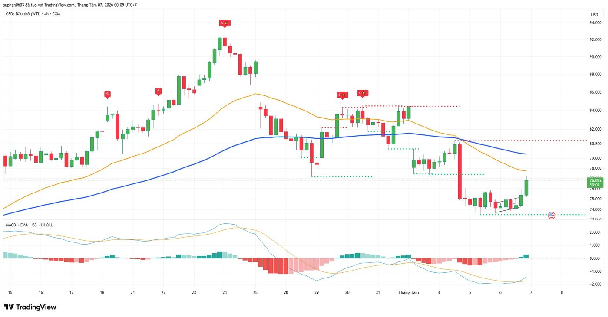
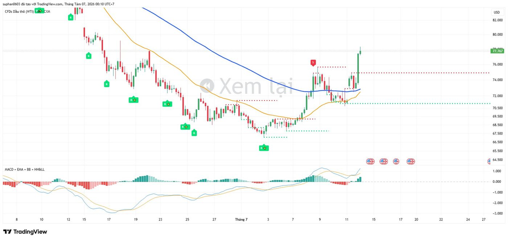

Kết hợp 5 lớp lọc độc lập — cấu trúc sóng giá, động lượng MACD, quá mua/quá bán Williams %R và mẫu nến đảo chiều — để xác nhận lẫn nhau trước khi vào lệnh Mua/Bán. Minh hoạ thực chiến trên Vàng, Bitcoin và Dầu WTI.
Một tín hiệu chỉ đáng tin khi đồng thời thoả điều kiện cấu trúc giá và điều kiện động lượng — không giao dịch chỉ dựa vào một chỉ báo đơn lẻ.
Xác định xu hướng nền: EMA34 > EMA89 → thiên hướng TĂNG, ngược lại → GIẢM. Giá ép sát/thủng EMA là vùng phản ứng quan trọng.
Điều kiện đủ cho tín hiệu MACD phụ: giá phải đóng cửa quanh Basis tại thời điểm MACD cắt Signal. Dải Upper/Lower dùng làm vùng chốt lời.
Xác nhận động lượng xu hướng: MacdLE (cắt lên) thiên mua, MacdSE (cắt xuống) thiên bán. Dùng làm bộ lọc phụ & cảnh báo riêng.
Xác định cấu trúc sóng giá HH/HL/LH/LL bằng thuật toán Zig-Zag. Tự vẽ đường Kháng cự/Hỗ trợ động — điều kiện cần để phát sinh tín hiệu.
Bộ lọc quá mua/quá bán: chỉ xác nhận SELL khi %R > -10, chỉ xác nhận BUY khi %R < -90. Điều kiện cần thứ hai.
Engulfing, Hammer, Sao Hôm/Mai... Nếu trùng đúng nến tín hiệu → nâng cấp thành B★ / S★, ưu tiên giao dịch.
Mỗi tín hiệu B/S chỉ được vẽ lên biểu đồ khi đồng thời thoả 2 điều kiện. Tín hiệu trở thành ★ khi có thêm điều kiện thứ 3.
Điểm pivot đáy được xác nhận là Higher-Low (HL) hoặc Lower-Low (LL) theo thuật toán Zig-Zag, độ trễ xác nhận 1 nến.
%R của nến ngay trước điểm tín hiệu < -90 (quá bán sâu) — lực bán đã cạn kiệt trước khi đảo chiều.
Bullish Engulfing, Hammer, Piercing Line, Morning Star, Bullish Harami tại đúng nến tín hiệu → gắn thêm "★".
Điểm pivot đỉnh được xác nhận là Higher-High (HH) hoặc Lower-High (LH) theo thuật toán Zig-Zag, độ trễ xác nhận 1 nến.
%R của nến ngay trước điểm tín hiệu > -10 (quá mua) — lực mua đã suy yếu trước khi đảo chiều.
Bearish Engulfing, Shooting Star, Dark Cloud Cover, Evening Star, Bearish Harami tại đúng nến tín hiệu → gắn thêm "★".
Mặc định ẩn trên biểu đồ, chỉ dùng để bắn cảnh báo/alert. Nên bật hiển thị khi cần thêm một lớp xác nhận độc lập cho lệnh khung 4H: MacdLE cùng chiều B → tăng độ tin cậy; MacdSE cùng chiều S → tăng độ tin cậy.
Bốn trạng thái quyết định — chọn tab để xem quy tắc chi tiết cho từng tình huống.
Ưu tiên 1 — Vào full khối lượng: xuất hiện B★ (hoặc S★) ngay tại đường Hỗ trợ/Kháng cự động, đồng pha với xu hướng khung lớn hơn (4H). Setup xác suất cao nhất.
Ưu tiên 2 — Thăm dò: chỉ có B/S thường nhưng trùng đúng vùng Hỗ trợ/Kháng cự, cùng chiều EMA34/EMA89. Chờ nến xác nhận trước khi vào thêm.
Xác nhận chéo khung: đối chiếu tín hiệu khung 15' với cấu trúc & EMA khung 4H — chỉ giao dịch thuận xu hướng khung lớn.
Không đuổi giá: nếu giá đã chạy xa điểm tín hiệu (>1 lần khoảng cách tới EMA34) thì bỏ qua, chờ nhịp hồi.
Thoát ngay (ưu tiên cao nhất): xuất hiện tín hiệu ngược chiều dạng ★ — đây là tín hiệu đảo chiều mạnh nhất hệ thống.
Thoát theo cấu trúc: giá đóng cửa phá vỡ đường Hỗ trợ/Kháng cự đang bảo vệ lệnh (hhllTrend đổi chiều) → thoát toàn bộ dù chưa có nhãn mới.
Thoát theo động lượng: MACD cắt Signal ngược chiều lệnh đang giữ, kết hợp Histogram thu hẹp liên tục 2–3 nến.
Chốt lời từng phần: giá chạm dải Bollinger đối diện hoặc chạm đúng vùng Kháng cự/Hỗ trợ đối ứng gần nhất.
Thị trường đi ngang: EMA34/EMA89 đan xen liên tục, MACD sát vùng 0, %R không chạm 2 dải cực trị → nên đứng ngoài hoặc giao dịch khối lượng rất nhỏ.
Tín hiệu nhiễu: B/S liên tục đảo chiều trong thời gian ngắn — chờ tín hiệu ★ rõ ràng mới hành động.
Ngược xu hướng khung lớn: khung 4H downtrend rõ mà khung 15' xuất hiện B thường — chỉ nên coi là lệnh lướt ngắn/thăm dò, không giữ dài hạn.
Sát thời điểm tin tức quan trọng: biến động có thể phá vỡ mọi vùng Hỗ trợ/Kháng cự — nên đứng ngoài hoặc giảm khối lượng.
Không có hệ thống nào đúng 100% — quản lý rủi ro là thứ quyết định việc bạn còn tồn tại trên thị trường.
| Hạng mục | Quy tắc |
|---|---|
| Điểm dừng lỗ (SL) | Đặt ngay ngoài đường Hỗ trợ/Kháng cự động gần nhất, cộng thêm biên độ an toàn tối thiểu bằng 20–30% khoảng ATR để tránh bị quét theo nhiễu giá. |
| Điểm chốt lời (TP) | Mục tiêu 1: vùng Kháng cự/Hỗ trợ đối diện gần nhất (chốt 50%). Mục tiêu 2: dải Bollinger đối diện hoặc pivot HH/LL liền trước, hoặc thoát toàn bộ khi có tín hiệu ★ ngược chiều. |
| Tỷ lệ R:R tối thiểu | Chỉ vào lệnh khi R:R ≥ 1:1.5. Bỏ qua thiết lập nếu R:R < 1:1. |
| Phân bổ khối lượng | Tín hiệu ★: tối đa khối lượng kế hoạch. Tín hiệu thường: 30–50% khối lượng, ưu tiên chờ nến xác nhận trước khi vào thêm. |
| Đa khung thời gian | Khung 4H xác định xu hướng chính & vùng S/R lớn; khung 15' để tìm điểm vào lệnh chính xác theo đúng chiều xu hướng 4H. |
| B★ / S★ đúng tại đường Hỗ trợ/Kháng cự, cùng chiều xu hướng 4H | VÀO LỆNH |
| B / S thường, cùng chiều xu hướng, chưa tại vùng S/R đẹp | THĂM DÒ |
| Đang giữ lệnh, cấu trúc & MACD vẫn thuận chiều | GIỮ LỆNH |
| Tín hiệu ★ ngược chiều lệnh đang giữ, hoặc gãy đường S/R bảo vệ | THOÁT LỆNH |
| Đi ngang, %R không chạm cực trị, tín hiệu B/S nhiễu liên tục | ĐỨNG NGOÀI |
Toàn bộ ví dụ trích trực tiếp từ biểu đồ XAU/USD, BTC/USD và WTI để minh hoạ cách áp dụng bộ quy tắc vào tình huống thật.

Trong vùng tích luỹ 4.020–4.060, giá liên tục xuất hiện tín hiệu B đúng tại đường Hỗ trợ — mẫu hình "gom lệnh thăm dò" cho tới khi bứt phá khỏi vùng đi ngang.
Khi giá phá Kháng cự và tăng dốc (nến xanh dài, MACD Histogram mở rộng mạnh) — đây là tín hiệu GIỮ LỆNH tốt nhất, không nên thoát sớm.
Tín hiệu S★ chỉ xuất hiện tại đỉnh 4.320 khi giá chạm Kháng cự, kèm 2 nến đỏ đảo chiều rõ rệt — điểm THOÁT LỆNH hợp lệ.

Trong nhịp tăng mạnh, hệ thống liên tục phát ra nhãn S thường tại nhiều đỉnh phụ — đây là nhịp điều chỉnh ngắn, KHÔNG phải đảo chiều toàn phần.
Vì đường Hỗ trợ phía dưới không hề bị phá và EMA34 vẫn trên EMA89, lệnh Buy vẫn cần được GIỮ NGUYÊN qua từng nhãn S thường này.
Chỉ khi giá tạo đỉnh 5.600 kèm S tại đúng vùng Kháng cự và sau đó phá Hỗ trợ, thị trường mới thật sự đảo chiều xuống 4.405.

Trước khi giá lao dốc, hàng loạt tín hiệu S xuất hiện tại đỉnh phụ 5.450–5.600 — đúng theo quy tắc thuận xu hướng giảm khung lớn.
Trong nhịp rơi thẳng đứng, KHÔNG có tín hiệu Mua nào vì %R chưa kịp chạm ngưỡng quá bán sâu — đây là lúc cần ĐỨNG NGOÀI, không "bắt đáy dao rơi".
Chỉ khi giá chững lại quanh 5.100–5.117 và xuất hiện nhãn B đi kèm %R quá bán, hệ thống mới xác nhận đủ điều kiện Mua hồi kỹ thuật.

Tín hiệu S★ tại đỉnh 98.000 là điểm Bán chất lượng cao nhất biểu đồ này (đủ cả 3 điều kiện).
Trong nhịp giảm về 87.650, vẫn có vài nhãn B thường tại đáy phụ — nhưng vì Kháng cự phía trên chưa bị phá và cấu trúc vẫn tạo LH/LL, các tín hiệu này chỉ nên xem là lệnh lướt ngắn hạn/thăm dò.
Nếu không chắc chắn quản lý được rủi ro, tốt nhất đứng ngoài chờ tín hiệu B★ thật sự đảo chiều cấu trúc.

Nhãn S liên tiếp tại đỉnh phụ là điểm Bán thuận xu hướng hợp lệ; B chỉ nên thăm dò nhỏ vì ngược xu hướng chính.

Chuỗi S★ liên tiếp tại đỉnh trong nhịp tăng là điểm chốt lời từng phần hợp lý; gãy Hỗ trợ cuối biểu đồ vẫn nên thoát theo quy tắc phá cấu trúc.

Mua đáy → tăng → Bán đỉnh S★ → giảm → Mua đáy lặp lại: minh hoạ chu kỳ range điển hình, phù hợp mua thấp/bán cao trong biên.

B★ đầu biểu đồ THẤT BẠI (giá vẫn giảm sâu). B★ tại đáy 84.800 sau đó mới là điểm đảo chiều thật, được cấu trúc xác nhận.

S★ tại đỉnh ~92 mở đầu nhịp giảm về 73–74; vùng đáy hình thành tam giác tăng, chờ tín hiệu B★ xác nhận trước khi Mua.

Nhiều nhãn B/B★ trong downtrend là lệnh hồi ngắn hạn (một số thất bại) — chỉ khi đáy 65–66 xác nhận mới chuyển thiên hướng Mua.
Tick từng mục trước mỗi lần đặt lệnh — chỉ vào lệnh khi trả lời "Có" cho phần lớn mục dưới đây. Trạng thái được lưu lại trên trình duyệt của bạn.
Không có hệ thống nào đúng 100%. Luôn đặt điểm dừng lỗ ngay khi vào lệnh, không gồng lỗ, không vào lệnh khi chưa thoả ít nhất điều kiện ① và ② ở Mục 2. Tín hiệu ★ giúp tăng xác suất nhưng không đảm bảo chắc thắng — minh chứng rõ ở Hình 8, nơi một tín hiệu B★ vẫn có thể thất bại.
Backtest trước khi áp dụng thật: chạy thử hệ thống trên dữ liệu lịch sử của từng tài sản (Vàng, Bitcoin, Dầu...) và từng khung thời gian trước khi giao dịch bằng tiền thật.
Không phải mọi tín hiệu ★ đều thắng: như minh hoạ ở Hình 8, tín hiệu B★ đầu biểu đồ Bitcoin vẫn thất bại — luôn tuân thủ quản lý rủi ro ở Mục 4.
Độ trễ xác nhận pivot: thuật toán Zig-Zag cần "Right Bars" để xác nhận đỉnh/đáy, nhãn B/S luôn xuất hiện chậm hơn 1 nến so với đỉnh/đáy thật.
Tin tức & thanh khoản: thời điểm công bố dữ liệu kinh tế quan trọng có thể khiến giá phá vỡ mọi vùng Hỗ trợ/Kháng cự bất thường.
Trang này được biên soạn với mục đích tổng hợp và trực quan hoá logic của bộ chỉ báo kỹ thuật; đây không phải là lời khuyên đầu tư hay khuyến nghị mua/bán. Thị trường tài chính (Vàng, Bitcoin, Hàng hoá...) luôn tiềm ẩn rủi ro cao; người giao dịch cần tự nghiên cứu, kiểm chứng và chịu trách nhiệm với quyết định của mình.